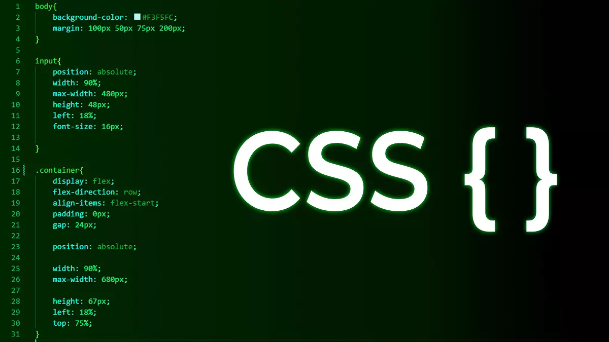

CSS
CSS (Cascading Style Sheets)
-->
CSS odpowiadają za prezentację. CSS wpływają na wygląd elementów HTML na ekranie, wydrukach itp.
Składnia CSS to reguły
Odpowiadają za prezentację treści strony
- Nie mają jednej wersji (rozwój modułów), potocznie mówi się, że aktualna wersja to 3
- Przeglądarki potrafią różnie interpretować CSS co prowadzi do tego, że...
- … pisanie stylów powoduje wiele frustracji u programistów (ale jest też niezłym wyzwaniem :))
- Całą specyfikację znajdziesz na stronie w3c